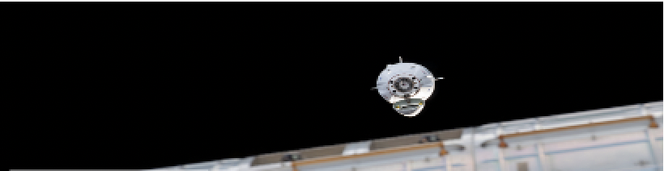

SpaceX
5,142 Tweets
@SpaceX
SpaceX designs, manufactures and launches the world’s most advanced rockets and spacecraft
100 Following
14.4M Followers

SpaceX designs, manufactures and launches the world’s most advanced rockets and spacecraft